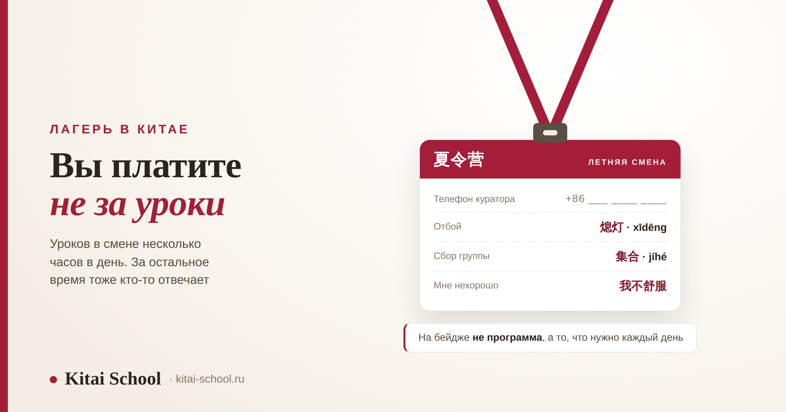
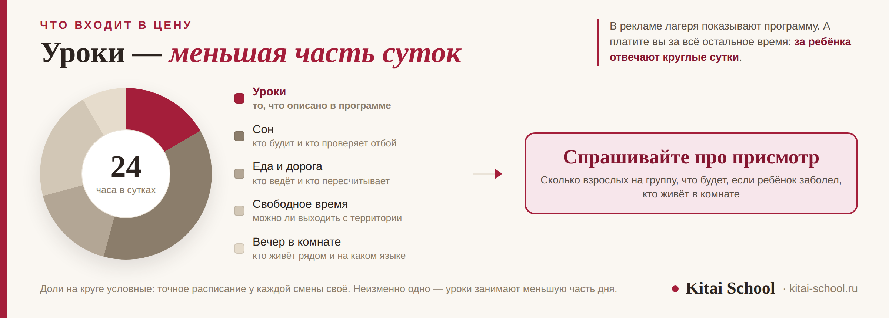

Учёба в Китае
Лагерь в Китае с изучением китайского: чем он отличается от курсов и что спросить до оплаты


Родители обычно сравнивают лагеря по программе: сколько уроков, какие экскурсии, что в подарок. А решает не это. Лагерь — это не курсы для детей, это программа с присмотром. Уроков в смене несколько часов в день, а за остальные часы тоже кто-то должен отвечать — и вы платите именно за это. Поэтому и спрашивать до оплаты надо не про уроки.
Лагерь, курсы и тур — три разные вещи, и их постоянно называют одним словом. Главный вопрос родителя — про присмотр: сколько взрослых на группу, что будет, если ребёнок заболел, можно ли выходить с территории. Уровень за смену не прыгнет, две-три недели для этого мало — но вырастает смелость говорить, и это честно ценнее. И ещё: словарь нужен не туристический, а бытовой — сосед по комнате, отбой, стирка, отпроситься. В разговорниках для путешественников этого нет.
Лагерь, курсы и тур: три разные вещи
Одним словом называют три разных продукта, и путаница тут стоит не денег, а разочарования. Разница не в качестве, а в том, что именно вы покупаете.
| Что это | Кто отвечает за ребёнка | Ради чего едут |
|---|---|---|
| Лагерь 夏令营 | организаторы, круглосуточно | среда, самостоятельность, язык в быту |
| Языковая программа | вы сами: вне занятий вы студент | уровень языка, если ехать надолго |
| Языковой тур | гид в рамках маршрута | впечатления, немного языка по дороге |
Если ребёнку нет восемнадцати, из этих трёх ему подходит, как правило, только первое — и не потому, что остальное хуже, а потому что во втором и третьем никто не отвечает за него круглые сутки. Чем языковые программы отличаются между собой и что решает граница в полгода — разобрано отдельно в статье про языковые курсы в Китае.
Главный вопрос — про присмотр, а не про программу
Посчитаем то, что обычно не считают. В сутках двадцать четыре часа. Уроков в лагере — несколько. Всё остальное это сон, еда, дорога, свободное время, вечер в комнате. И вот за эти оставшиеся часы кто-то должен отвечать.
Отсюда и список вопросов, которые стоит задать до оплаты. Он не про уроки.
| Вопрос | Что показывает ответ |
|---|---|
| Сколько взрослых на группу и кто они? | сопровождающие от организатора или только местные преподаватели |
| Есть ли русскоязычный взрослый рядом? | к кому ребёнок пойдёт, если растерялся и не может объяснить |
| Как устроена связь с родителями? | ежедневный отчёт, чат, звонки по расписанию — или «напишем, если что» |
| Что будет, если ребёнок заболел? | куда везут, кто едет с ним, что со страховкой |
| Можно ли выходить с территории? | есть ли правило и кто его соблюдает |
| Кто живёт в комнате и как расселяют? | вместе с русскоязычными или вперемешку — от этого зависит язык |
Последняя строка важнее, чем кажется. Если всю смену рядом только русскоязычные, китайский останется внутри уроков — ровно то же самое происходит и со взрослыми на языковых программах. Спрашивать про расселение не мелочно, это прямо про результат. И нормальный организатор отвечает на такой вопрос сразу: расселение он всё равно планирует заранее.

Сколько языка вырастет за смену
Честный ответ: уровень заметно не поднимется. Две-три недели — слишком мало, язык набирается временем, и обещать здесь скачок значило бы обманывать.
Но вырастает другое, и это не утешительный приз. Дети возвращаются с тем же уровнем по учебнику — и вдруг начинают говорить. Потому что в лагере пришлось: попросить воды, объяснить, что болит, спросить, во сколько сбор. Язык перестаёт быть школьным предметом и становится способом договориться.
| Что | За смену |
|---|---|
| Уровень по учебнику | почти не меняется, и это нормально |
| Смелость открыть рот | растёт сильнее всего |
| Привычка к речи вокруг | появляется за первую неделю |
| Бытовые слова | запоминаются намертво, потому что нужны сразу |
| Самостоятельность | часто главное, что привозят домой |
И обратная сторона, о которой стоит подумать заранее. С полного нуля поездка превращается в экскурсию с кружком — это тоже неплохо, но продавать её как языковую программу нечестно. Если хочется, чтобы смена сработала на язык, базу набирают до неё: маршрут по возрастам разобран в статье про китайский язык для детей, а детский экзамен — в разборе про экзамен YCT.
Мальчик поехал в смену после двух лет занятий. Родители ждали, что вернётся и заговорит. Вернулся — и по учебнику остался там же, где был. Мама расстроилась и написала мне, что поездка не окупилась.
А через неделю прислала видео: сын заказывает еду по-китайски в московском ресторане. Сам, без подготовки, не сверяясь с телефоном. На том же самом уровне, что и до поездки.
Изменился не объём знаний, а отношение. До лагеря китайский был предметом, где можно ошибиться и получить замечание. После — способом получить то, что нужно. Это не то, за чем обычно едут, но именно это чаще всего и привозят.
Слова, которых нет в разговорниках
Наборы фраз для туристов подростку в лагере почти не помогут: турист заселяется в отель и идёт в ресторан, а ребёнок живёт в общежитии по расписанию. Нужен другой словарь.
| По-китайски | Чтение | Когда нужно |
|---|---|---|
| 室友 | shìyǒu | сосед по комнате — первое слово знакомства |
| 宿舍 | sùshè | общежитие; спросить дорогу до своего корпуса |
| 熄灯 | xīdēng | отбой: во сколько гасят свет |
| 开水房 | kāishuǐfáng | комната с кипятком; холодную воду из-под крана не пьют |
| 洗衣服 | xǐ yīfu | стирать вещи; где машинка и как платить |
| 集合 | jíhé | сбор: «во сколько собираемся» |
| 请假 | qǐngjià | отпроситься с занятия или мероприятия |
| 我不舒服 | wǒ bù shūfu | мне нехорошо — главная фраза для медпункта |
| 我没听懂 | wǒ méi tīngdǒng | я не понял; честнее, чем кивать |
Одно слово тут стоит объяснить отдельно, потому что оно удивляет. 开水房 — это комната, где набирают кипяток, и она есть почти в каждом общежитии. Воду из-под крана в Китае не пьют, а горячую воду пьют круглый год, даже летом. Ребёнку это лучше сказать заранее, иначе первые дни он будет искать кулер. Что ещё положить в чемодан — в разборе что взять с собой в Китай, а что взять из лекарств — в статье про аптечка для поездки в Китай.
Ещё одна мелочь, на которой подростки спотыкаются. 请假 в речи разрывается: 请一天假 — отпроситься на день. Это не исключение из правила, а целый класс слов, и разобран он в статье про глагольно-объектные сочетания.
Туристические и ресторанные фразы тоже пригодятся, но их мы не повторяем: набор для поездки есть в статье про китайский язык для путешествий, а меню и еда — в разборе еда на китайском. Про сленг, который подросток услышит от сверстников, отдельно: там важнее не список, а механизм, и это разобрано в статье про китайский интернет-сленг.
Красные флаги при выборе
Короткий список того, после чего стоит задать ещё пять вопросов.
| Признак | Почему это важно |
|---|---|
| Обещают уровень за смену | за две-три недели он не меняется; обещание держать нечем |
| Не называют число сопровождающих | это первое, что знает нормальный организатор |
| Нет ответа про болезнь и страховку | самая вероятная неприятность в поездке — и самая недодуманная |
| Программа расписана, а быт — нет | показывают то, что красиво, а вопросы будут по остальному |
| Расселение «как получится» | от соседей по комнате зависит, зазвучит ли китайский вообще |
Про документы коротко, потому что тут всё меняется. Смены такой длины обычно укладываются в короткую учебную визу, но точный тип, срок и порядок оформления проверяют на своём году — у принимающей стороны и в консульском учреждении. Отдельно для несовершеннолетнего нужны документы от родителей и понятный ответ, кто сопровождает ребёнка в дороге. Что меняется на рубеже в сто восемьдесят дней — в статье про языковые курсы в Китае.
Частые вопросы (FAQ)
Чем лагерь в Китае отличается от языковых курсов?
Присмотром. На языковой программе вы студент: пришли на занятия, ушли, дальше отвечаете за себя сами. В лагере за ребёнка отвечают круглые сутки — есть сопровождающие, расписание на весь день, правила выхода с территории и связь с родителями. Уроки в лагере обычно занимают несколько часов, а всё остальное время тоже надо кому-то закрывать, и именно за это родитель и платит. Поэтому и вопросы до оплаты нужно задавать не про программу, а про то, кто и как присматривает.
Сколько китайского вырастет за одну смену?
Уровень за две-три недели заметно не поднимется, и обещать обратное было бы нечестно: язык набирается временем. Зато вырастает другое, и это тоже ценно — смелость открывать рот, привычка к чужой речи вокруг, понимание, что язык нужен не для оценки, а чтобы попросить воды. Дети часто возвращаются с тем же уровнем по учебнику, но начинают говорить — потому что в лагере пришлось.
С какого возраста имеет смысл ехать?
Однозначной границы нет, и решать стоит не по возрасту, а по двум вещам. Первая: справится ли ребёнок с бытом вдали от дома — сам следит за вещами, умеет попросить помощи, не теряется в новой обстановке. Вторая: есть ли хоть какая-то база языка. С полного нуля поездка превращается в экскурсию с кружком, и это тоже нормально, но продавать её как языковую программу нечестно.
Что спрашивать у организаторов до оплаты?
Про присмотр, а не про программу. Сколько сопровождающих на группу и кто они. Есть ли русскоязычный взрослый рядом. Как устроена связь с родителями и как часто. Что происходит, если ребёнок заболел: куда везут, кто едет с ним, есть ли страховка. Можно ли выходить с территории и с кем. Кто живёт в комнате и как расселяют. Ответы на эти вопросы говорят о лагере больше, чем описание уроков.
Какие слова пригодятся ребёнку в общежитии?
Не туристические, а бытовые: 室友 сосед по комнате, 宿舍 общежитие, 熄灯 отбой, 洗衣服 стирать вещи, 开水房 комната с кипятком, 集合 сбор, 请假 отпроситься, 我不舒服 мне нехорошо, 我没听懂 я не понял. Этих слов нет в разговорниках для путешественников, потому что турист с ними не сталкивается, а в лагере они нужны каждый день.
Нужна ли отдельная виза и документы на ребёнка?
Программы такой длины обычно укладываются в короткую учебную визу, но точный тип, срок и порядок оформления зависят от программы и года — это проверяют на сайте принимающей стороны и в консульском учреждении. Отдельно для несовершеннолетнего нужны документы от родителей и понятный ответ на вопрос, кто сопровождает ребёнка в дороге. Что меняется на границе в сто восемьдесят дней, разобрано в статье про языковые курсы в Китае.
Хотите, чтобы смена сработала на язык, а не осталась экскурсией? На диагностическом занятии посмотрим, где ребёнок сейчас, и соберём базу до поездки — чтобы в Китае он говорил, а не показывал пальцем. Оставить заявку или написать в Telegram.
Дальше по теме: форматы программ и виза — языковые курсы в Китае; как устроена китайская школа изнутри — факты о китайских школах; маршрут для ребёнка по возрастам — китайский язык для детей; детский экзамен — экзамен YCT; фразы для поездки — китайский язык для путешествий; меню и еда — еда на китайском; сленг сверстников — китайский интернет-сленг; что взять с собой — что взять с собой в Китай; аптечка — аптечка для поездки в Китай; поведение и вежливость — китайский этикет общения; цены на месте — дорого ли в Китае.
Источники
- Практика Kitai School — подготовка детей и подростков к поездкам на языковые смены и работа с теми, кто вернулся.
- Программы летних смен при китайских вузах и школах: состав, сроки и условия публикуются организаторами на каждый сезон.
- Порядок оформления краткосрочных учебных виз и документов для несовершеннолетних — уточняется на своём году в консульском учреждении.
Пусть поездка придаст смелости! 出门长见识！